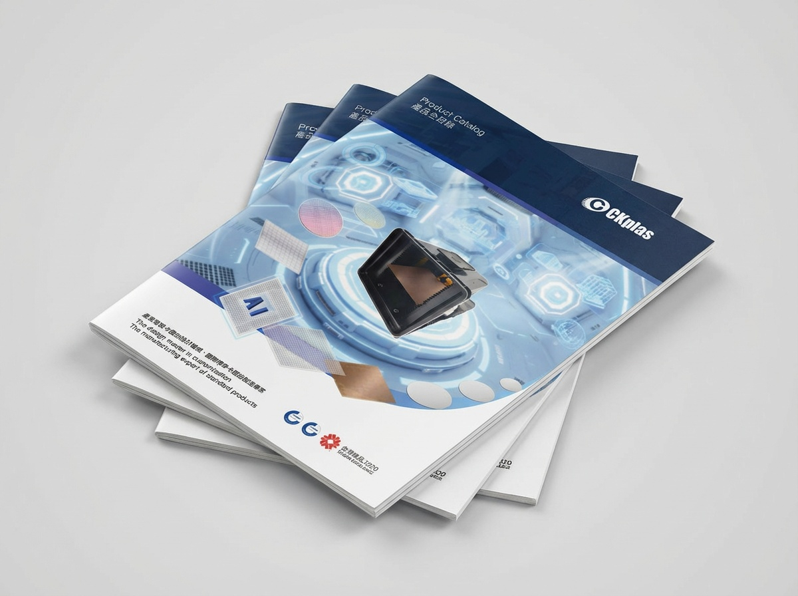

產業理解
理解半導體、光電、太陽能與 LED 產業鏈脈絡，將產品角色、應用情境與客戶需求整理成可溝通的內容架構。
Semiconductor B2B Marketing
將半導體複雜技術、上下游產業供應鍊、展覽接觸與客戶需求，轉化為可理解、可追蹤、可累積的品牌行銷資產。
Role
在半導體載具與自動化設備相關產業中，行銷不只是做出好看的素材，而是讓複雜產品被理解、讓業務溝通更有效、讓每一次展覽與內容產出能被持續累積。
理解半導體、光電、太陽能與 LED 產業鏈脈絡，將產品角色、應用情境與客戶需求整理成可溝通的內容架構。
把規格、流程、展品與產業觀點轉化為型錄、展覽、社群、影片與教育訓練素材，支援品牌與業務雙向溝通。
透過客戶詢問追蹤、展後成效整理與內容資料庫，讓行銷不只是一次性產出，而是可複製、可檢核的工作系統。
Redesign
透過產品型錄設計重新定義企業在半導體載具業界是重要領導品牌。
讓 CKPLAS 不只是供應商，
而是產業知識與標準的引導者。


What I Did
不只是型錄，而是產業語言的定義者。
當市場開始使用同一套分類語言，標準就已經形成。
Restructure
本專案聚焦於客戶來電與來信的即時紀錄與流程追蹤，建立從需求進線、派單、業務跟進到成交結果的完整數據鏈，讓每一次客戶詢問，都能被追蹤、被檢核，並轉化為可分析的業務洞察。
B2B 行銷 × 業務流程優化 × 數據治理
What I Did
詢問很多，但流程不可視；數據存在，卻無法分析。
Redefine
B2B 社群不應只追求即時流量，而是長期在正確受眾心中留下專業、信任與溫度。我將社群內容整理為三條主線：產品品牌、企業品牌與雇主品牌，並以不同語系與社群平台進行分眾經營，針對地區與文化差異調整行銷內容，更符合不同國家或文化風格。
用產品定位、應用場景與技術價值，累積「這家公司理解產業」的專業印象。
透過展會、里程碑、產業觀點與企業行動，強化供應鏈夥伴的信任感。
讓團隊、日常與工作現場被看見，降低 B2B 品牌距離感，也提升內部參與與認同。
以台灣市場、既有客戶與內部員工為核心，建立產品理解、企業動態與品牌信任的主要溝通基礎。
以 X 作為日本市場內容累積平台，對應日本展會與在地閱讀習慣，建立更貼近文化語境的品牌溝通素材。
以 LinkedIn 與英文內容支援國際曝光，讓品牌在全球半導體供應鏈中維持專業且一致的形象。
Exhibition Marketing
以 SEMICON Taiwan 2025 為代表，展覽不只是現場曝光，而是一個從展前策略、現場溝通、內容產出到展後分析的完整專案。
我將展覽視為可衡量、可複製、可優化的品牌專案：展前定義受眾與訊息，現場管理動線與互動，展後整理來訪客戶資料、社群聲量與下一步行銷參考。
Internal Enablement
除了對外行銷，我也針對業務部與全公司新人進行產業教育訓練，主題涵蓋半導體、光電、太陽能與 LED。這類訓練的重點不是堆疊艱深名詞，而是把產業鏈、製程角色、應用場景與公司產品之間的關係，整理成新人與業務能理解、能轉述、能應用在客戶溝通中的知識內容。
透過內部教育訓練，行銷不只是對外發聲，也能成為組織知識整合的一部分，協助不同部門用更一致的語言理解市場、產品與客戶。
AI Visual Content
半導體產業因技術機密與場域限制，經常難以取得第一手影像素材。面對這樣的限制，我導入 AI 協作設計流程，創造具產業深度、可被視覺化、也能避開實拍限制的展覽與社群素材。
這些素材不只是畫面補充，而是用來建立產業敘事：讓半導體載具、清洗流程、循環供應鏈與永續價值被看見，也讓品牌在展覽現場與社群內容中有更清楚的辨識度。
Value
我擅長的不只是把事情做漂亮，而是讓品牌訊息更清楚、讓業務溝通更有效、讓行銷成果能被追蹤與累積。面對技術門檻高、決策週期長、素材限制多的半導體 B2B 產業，我能把設計、策略、內容與流程整理成一套可執行的行銷與知識系統。